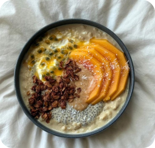
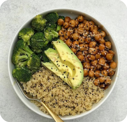

Ешь
Живи
Чувствуй
Tarelka — про вкусную еду и спокойное отношение к себе.
Помогаем найти свой ритм: ешь вкусно, чувствуй себя легко и не
считай калории.


60+
Рецептов на каждый день
20+
Статьей для самообучения
10+
Тестов чтобы понять себя
Мы верим в то, что
делаем и поэтому
у нас получается
Еда может быть вкусной, простой и не вызывать чувства вины. Делимся знаниями как питаться осознанно. Рассказываем, как забота о себе начинается с тарелки, как найти баланс и почему здоровое питание не должно быть скучным.



Завтрак
Яичница
с гречкой, авокадо и свеклой

Обед
Жареный лосось с рисом и брокколи

Перекус
Куриная грудка с картошкой и огурцами

Ужин
Салат цезарь с легким майозным соусом

Полезные статьи для самообразования
Стресс и еда
Как стресс влияет
на аппетит почему это нормально
Иногда нас тянет к сладкому не из за голода. Разбираемся, как стресс влияет на аппетит и почему не стоит винить себя.
Правило тарелки
Что такое «правило тарелки» и почему это реально работает
Простая схема, которая помогает собрать приём пищи без весов и подсчётов. Идеально, если не хочется заморачиваться.
Баланс и тело
Баланс 80/20: сладкое тоже часть здорового питания
Объясняем, почему разрешённые 20% любимых продуктов помогают не срываться и сохранять психический комфорт.
Вредное и полезное
Сколько пачек чипсов можно есть в месяц? Все не так строго
Разбираемся, где проходит грань между удовольствием и привычкой — и как не превращать еду в источник вины.
Гайды, которые помогут наслаждаться едой каждый день
01
Гид по этикеткам: как читать состав продуктов
02
Список продуктов, которые всегда стоит держать под рукой
03
Как научиться слушать своё тело: сигналы сытости и голода
04
Как составить тарелку: белки, жиры, углеводы без калькулятора

Напиши свой телеграм и мы отправим приглашение в секретный чат для тех, кто любит вкусно и полезно поесть